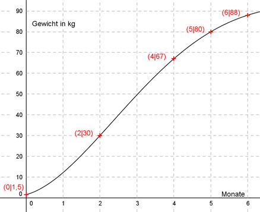

Aufgabe 131 In der Massentierhaltung ist eine wichtige Größe, wann das Tier Schlachtgewicht erreicht. Messungen haben ergeben: Anzahl Monate 0 2 4 5 6 Gewicht G in kg 1,5 30 67 80 88 Man hat festgestellt, dass die Gewichtszunahme durch eine ganzrationale Funktion 4. Grades beschrieben werden kann. a) Welches Gewicht hat ein Tier nach einem Monat? b) Nach wieviel Tagen ist die Gewichtszunahme maximal?  Allgemeine Form einer ganzrationalen Funktion 4. Grades: f(x) = ax4 + bx3 + cx2 + dx + e f’(x) = 4ax3 + 3bx2 + 2cx + d f’’(x) = 12ax2 + 6bx + 2c 5 Bedingungen: 1. Geht durch (0|1,5) bedeutet: f(0) = 1,5 --> a * 04 + b * 03 + c * 02 + d * 0 + e = 1,5 --> e = 1,5 2. Geht durch (2|30) bedeutet: (e = 1,5 eingesetzt) f(2) = 30 --> a * 24 + b * 23 + c * 22 + d * 2 + 1,5 = 30 --> 16a + 8b + 4c + 2d + 1,5 = 30 |-1,5 16a + 8b + 4c + 2d = 28,5 I 3. Geht durch (4|67) bedeutet: (e = 1,5 eingesetzt) f(4) = 67 --> a * 44 + b * 43 + c * 42 + d * 4 + 1,5 = 67 --> 256a + 64b + 16c + 4d + 1,5 = 67 | -1,5 256a + 64b + 16c + 4d = 65,5 II 4. Geht durch (5|80) bedeutet: (e = 1,5 eingesetzt) f(5) = 80 --> a * 54 + b * 53 + c * 52 + d * 5 + 1,5 = 80 --> 625a + 125b + 25c + 5d + 1,5 = 80 |-1,5 625a + 125b + 25c + 5d = 78,5 III 5. Geht durch (6|88) bedeutet: (e = 1,5 eingesetzt) f(6) = 88 --> a * 64 + b * 63 + c * 62 + d * 6 + 1,5 = 88 --> 1296a + 216b + 36c + 6d + 1,5 = 88 |-1,5 1296a + 216b + 36c + 6d = 86,5 IV I * (-2) + II -32a - 16b - 8c - 4d = -57 256a + 64b + 16c + 4d = 65,5 ------------------------------ 224a + 48b + 8c = 8,5 V I * (-3) + IV -48a - 24b - 12c - 6d = -85,5 1296a + 216b + 36c + 6d = 86,5 -------------------------------- 1248a + 192b + 24c = 1 VI I * (-2,5) + III -40a - 20b - 10c - 5d = -71,25 625a + 125b + 25c + 5d = 78,5 ------------------------------- 585a + 105b + 15c = 7,25 VII V * (-3) + VI -672a - 144b - 24c = -25,5 1248a + 192b + 24c = 1 --------------------------- 576a + 48b = -24,5 VIII V * (-15) + VI * 8 -3360a - 720b - 120c = -127,5 4680a + 840b + 120c = 58 ----------------------------- 1320a + 120b = -69,5 IX VIII * (-5) + IX * 2 -2880a - 240b = 122,5 2640a + 240b = -139 ----------------------- -240a = -16,5 |:(-240) 16,5 165 11 a = ------ = ------ = ----- = 0,006875 240 2400 160 a = 0,06875 in VIII eingesetzt: 576 * 0,06875 + 48b = -24,5 39,6 + 48b = -24,5 -39,6 48b = -64,1 | :48 64,1 641 b = - ------- = - ----- 48 480 a = 0,06875 und b = -641/480 in V eingesetzt: 224 * 0,06875 - 48 * (641/480) + 8c = 8,5 15,4 - 64,1 + 8c = 8,5 -48,7 + 8c = 8,5 |+48,7 8c = 57,2 |:8 c = 7,15 a = 0,06875 und b = - 641/480 und c = 7,15 in I eingesetzt: 16 * 0,06875 + 8 * (- 641/480) + 4 * 7,15 + 2d = 28,5 1,1 - 641/60 + 28,6 + 2d = 28,5 29,7 - 641/60 + 2d = 28,5 |+641/60 29,7 + 2d = 641/60 + 28,5 |-29,7 2d = 641/60 - 1,2 641 - 72 2d = ---------- |:2 60 569 d = ------ 120 f(x) = 0,06875x4 - (641/480)x3 + 7,15x2 + (569/120)x + 1,5 f(1) = 0,006875 - 1,33548 + 7,15 + 4,74167 + 1,5 f(1) = 12,125 kg b) Den stärksten Anstieg erhält man, wenn man das Maximum der ersten Ableitung ermittelt: f’(x) = (11/40)x3 - (641/160)x2 + 14,3x + 569/120 f’’(x) = 0 wegen Maximum f’’(x) = (33/40)x² - (641/80)x + 14,3 = 0 | +80 66x2 - 641x + 114,4 = 0 A, B, C - Formel A = 66, B = -641, C = 114,4 641 ± √(410881-302016) x1,2 = ------------------------ 2 * 66 641 ± √108865 x1,2 = ----------------- 132 641 ± 329,9 x1,2 = ------------- 132 970,9 x1 = --------- = 7,36 Monate, > 6 keine Lösung 132 311,1 x2 = --------- = 2,36 Monate 132 --> 2,36 * 30 = 70,8 --> 71 Tage gerundet f’’’(2,36) = (66/40) * 2,36 - 641/80 = 3,894 - 8,0125 < 0 --> Maximum